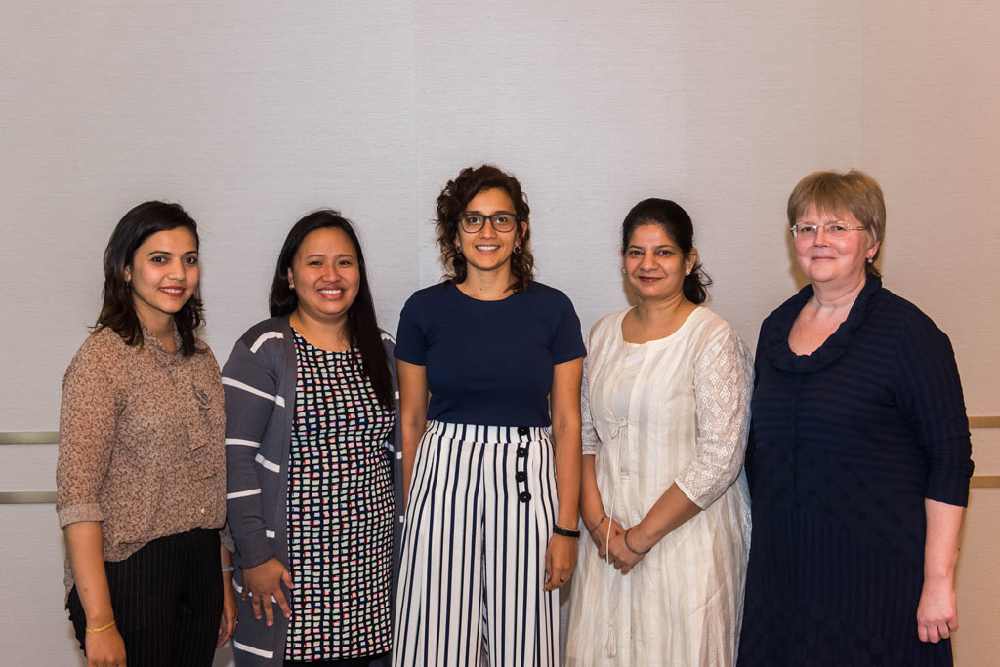
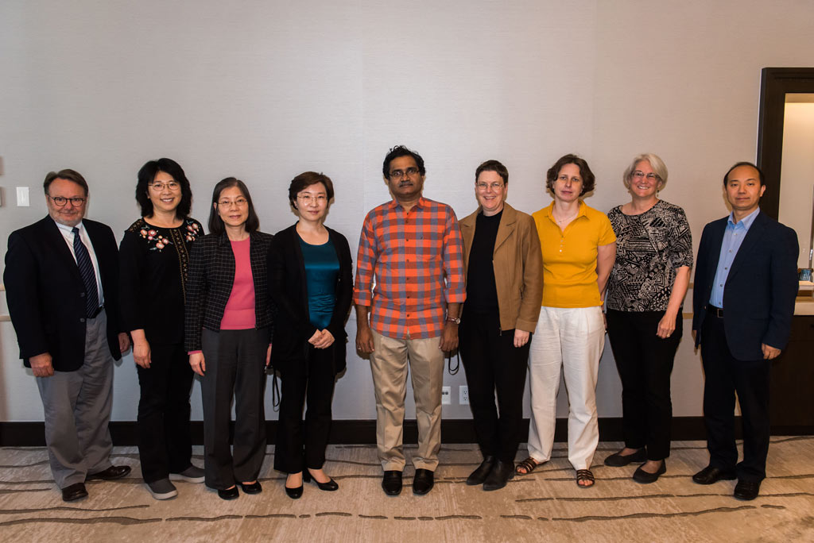
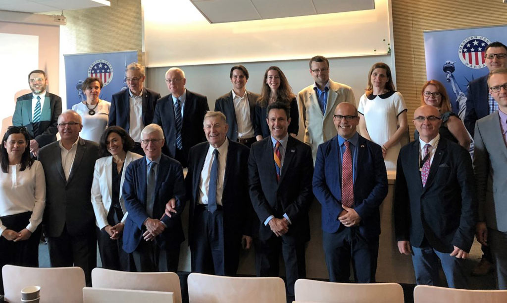

September 2019
In This Issue
Global Health Research and Training Initiatives
Contact
Mark Parascandola, PhD, MPH
DCCPS International Research Coordinator
Global Health Research and Training Initiatives
NCI-CRUK Fellow Research Exchange
Jennifer Guida is participating in a fellow research exchange between NCI and Cancer Research UK (CRUK)  in London, UK, which began in late August 2019. During her 5-week detail, Dr. Guida will be learning about CRUK and its role in translating research to policy. She also will lead an analysis of risk factors for obesity in youth, with the aim of identifying potential opportunities for intervention.
in London, UK, which began in late August 2019. During her 5-week detail, Dr. Guida will be learning about CRUK and its role in translating research to policy. She also will lead an analysis of risk factors for obesity in youth, with the aim of identifying potential opportunities for intervention.
Operationalizing the 2018 World Cancer Research Fund/American Institute for Cancer Research (WCRF/AICR) Cancer Prevention Recommendations: A Standardized Scoring System
Jill Reedy and Marissa Shams-White recently co-authored a paper with researchers from the World Cancer Research Fund International (WCRF), the American Institute for Cancer Research (AICR), and ISGlobal. The paper details how they developed a standardized scoring system to examine adherence to the 2018 WCRF/AICR’s Cancer Prevention Recommendations. One goal of the 2018 WCRF/AICR Score is to improve researchers’ ability to compare results across studies and populations. Dr. Shams-White also published blog posts with WCRF  and AICR
and AICR  and held a Twitter chat
and held a Twitter chat  with her collaborators to highlight the scoring system, its development, and potential applications.
with her collaborators to highlight the scoring system, its development, and potential applications.
Indonesia: the Expansion of JUUL from the USA
In early July 2019, the journal Tobacco Control published the industry watch article “JUUL from the USA to Indonesia  : implications for expansion to LMICs,” coauthored by Elizabeth Orlan (Gillings School of Global Public Health, UNC at Chapel Hill), Rachel Grana, and Mark Parascandola. The authors note that “Indonesia and other LMICs have limited capacity to monitor and regulate these novel devices that pose potential threats to public health. JUUL’s entrance into the Indonesian market and the markets of multiple countries in Asia and Europe emphasizes the need to monitor trends in e-cigarette use around the world, in order to prevent increasing global use of these products, and further nicotine addiction.”
: implications for expansion to LMICs,” coauthored by Elizabeth Orlan (Gillings School of Global Public Health, UNC at Chapel Hill), Rachel Grana, and Mark Parascandola. The authors note that “Indonesia and other LMICs have limited capacity to monitor and regulate these novel devices that pose potential threats to public health. JUUL’s entrance into the Indonesian market and the markets of multiple countries in Asia and Europe emphasizes the need to monitor trends in e-cigarette use around the world, in order to prevent increasing global use of these products, and further nicotine addiction.”
SRNT Europe 19th Annual Conference
Carolyn Reyes-Guzman presented two posters at the Society for Research on Nicotine and Tobacco (SRNT) Europe 19th Annual Conference, held September 12-14, 2019, in Oslo, Norway. Both posters are based on research she conducted with recent Behavioral Research Program fellow Jamie Cordova. The first, “Chronotype (sleep timing) and cigarette smoking: findings from the National Health and Nutrition Examination Survey (2015-2016),” is a collaboration with the Division of Cancer Epidemiology and Genetics (DCEG). The second, “Tobacco use profiles by asthma status for adults and youth in the PATH Study (2013-2016),” is a collaboration between DCCPS’s Tobacco Control Research Branch, DCEG, the National Institute of Minority Health and Health Disparities, and the National Heart, Lung, and Blood Institute.
International Transdisciplinarity Conference
Kara Hall attended the International Transdisciplinarity Conference  , held September 10-13, 2019, in Gothenburg, Sweden, in her role as founding member of and federal liaison to a transnational advisory board working to develop a new scientific organization. The new organization, ITD-Alliance (Inter- and Transdisciplinary Alliance), is an international group aimed at strengthening and promoting the global capacity and caliber of inter- and transdisciplinary research, education, and training. This ITD-Alliance launched its first strategic planning workshop at the conference. Additionally, Dr. Hall showcased the NCI Team Science Toolkit to the conference’s large global audience.
, held September 10-13, 2019, in Gothenburg, Sweden, in her role as founding member of and federal liaison to a transnational advisory board working to develop a new scientific organization. The new organization, ITD-Alliance (Inter- and Transdisciplinary Alliance), is an international group aimed at strengthening and promoting the global capacity and caliber of inter- and transdisciplinary research, education, and training. This ITD-Alliance launched its first strategic planning workshop at the conference. Additionally, Dr. Hall showcased the NCI Team Science Toolkit to the conference’s large global audience.
2019 AAPINA and TWNA Joint International Conference
Sylvia Chou was a keynote speaker at a joint international conference sponsored by the Asian American/Pacific Islander Nurses Association and the Taiwan Nurses Association  , held August 16-17, 2019, in Taichung City, Taiwan. In her presentation, Dr. Chou provided an overview of the current state of the science at the intersection of nursing and health behavior research, offering examples of ongoing research in the areas of cancer clinical trials communication, social media, cancer survivorship, palliative care, and cancer caregiving interventions. Dr. Chou also discussed strategies for bringing insights from clinical nursing practice into NIH-funded research.
, held August 16-17, 2019, in Taichung City, Taiwan. In her presentation, Dr. Chou provided an overview of the current state of the science at the intersection of nursing and health behavior research, offering examples of ongoing research in the areas of cancer clinical trials communication, social media, cancer survivorship, palliative care, and cancer caregiving interventions. Dr. Chou also discussed strategies for bringing insights from clinical nursing practice into NIH-funded research.
WHO Guidelines Development Group
Rick Troiano attended the first meeting of the World Health Organization physical activity guidelines development group  (GDG), held July 2-4, 2019, in Geneva, Switzerland. The WHO convened the 24-member GDG to update the Global Recommendations on Physical Activity for Health, published in 2010. The update process will build upon the literature reviews conducted by the 2018 Physical Activity Guidelines Advisory Committee as well as recent reports from other countries developing national guidelines.
(GDG), held July 2-4, 2019, in Geneva, Switzerland. The WHO convened the 24-member GDG to update the Global Recommendations on Physical Activity for Health, published in 2010. The update process will build upon the literature reviews conducted by the 2018 Physical Activity Guidelines Advisory Committee as well as recent reports from other countries developing national guidelines.
International Conference on Ambulatory Monitoring of Physical Activity and Movement
Rick Troiano attended the sixth International Conference on Ambulatory Monitoring of Physical Activity and Movement  (ICAMPAM), held June 26-28, 2019, in Maastricht, Netherlands. Dr. Troiano, who was a member of the meeting’s Scientific Planning Committee, chaired a session and presented a poster titled “Preparation and release of NHANES and NNYFS wrist accelerometer data.” He was also a co-author on two presentations led by NCI colleagues. In 2017, this meeting was hosted by NIH and held at the Natcher Conference Center.
(ICAMPAM), held June 26-28, 2019, in Maastricht, Netherlands. Dr. Troiano, who was a member of the meeting’s Scientific Planning Committee, chaired a session and presented a poster titled “Preparation and release of NHANES and NNYFS wrist accelerometer data.” He was also a co-author on two presentations led by NCI colleagues. In 2017, this meeting was hosted by NIH and held at the Natcher Conference Center.
Metabolomics 2019
Krista Zanetti and Mukesh Verma attended the 15th Annual Conference of the International Metabolomics Society  , held June 23-27, 2019, in The Hague, Netherlands. Dr. Verma spoke about activities at NIH related to the microbiome and metabolomics during the ”Metabolomics-enabling tools for large studies and biobank initiatives – a precision medicine approach” workshop; represented the COMETS Steering Committee in the ”Building international collaborations in metabolomics: an epidemiological perspective“ workshop; and provided approaches to develop collaborations with investigators in Europe and Asia. Dr. Zanetti, who was a member of the International Organizing Committee, organized a workshop titled ”The importance of quality assurance and quality control in untargeted metabolomics“ and a Career Night for the Society’s early-career members, chaired the Epidemiology Scientific Session, and presented a poster titled “mQACC: A community-led initiative to promote quality assurance and quality control in untargeted metabolomics research.” Dr. Zanetti was also named as an Honorary Fellow to the Metabolomics Society during the conference.
, held June 23-27, 2019, in The Hague, Netherlands. Dr. Verma spoke about activities at NIH related to the microbiome and metabolomics during the ”Metabolomics-enabling tools for large studies and biobank initiatives – a precision medicine approach” workshop; represented the COMETS Steering Committee in the ”Building international collaborations in metabolomics: an epidemiological perspective“ workshop; and provided approaches to develop collaborations with investigators in Europe and Asia. Dr. Zanetti, who was a member of the International Organizing Committee, organized a workshop titled ”The importance of quality assurance and quality control in untargeted metabolomics“ and a Career Night for the Society’s early-career members, chaired the Epidemiology Scientific Session, and presented a poster titled “mQACC: A community-led initiative to promote quality assurance and quality control in untargeted metabolomics research.” Dr. Zanetti was also named as an Honorary Fellow to the Metabolomics Society during the conference.
NAACCR/IACR Combined Scientific Conference and International Fellows Cancer Registry Meeting
Brenda Edwards attended the 2019 NAACCR/IACR Combined Scientific Conference  , in Vancouver, BC, Canada, June 9-13, 2019. The North American Association of Central Cancer Registries (NAACCR) hosted this combined conference of NAACCR and the International Association of Cancer Registries (IACR) for 2019, which welcomed approximately 450 attendees from all five continents, representing 36 countries and five territories. Funding for this conference was made possible by R13CA232427-01 from the DCCPS Surveillance Research Program. The scientific content areas covered included epidemiologic studies using cancer surveillance data, tools for cancer registries, challenges and solutions in data management, data collection and operations, advanced data collection, childhood cancers, cancer control, and new directions. While there, Dr. Edwards facilitated the invitation-only International Fellows Cancer Registry Meeting on June 10. Five of the seven NAACCR-awarded fellows obtained visas and participated in the conference (picture 1), along with nine senior global cancer registry leaders from NAACCR and IACR (picture 2), who served as mentors to the fellows.
, in Vancouver, BC, Canada, June 9-13, 2019. The North American Association of Central Cancer Registries (NAACCR) hosted this combined conference of NAACCR and the International Association of Cancer Registries (IACR) for 2019, which welcomed approximately 450 attendees from all five continents, representing 36 countries and five territories. Funding for this conference was made possible by R13CA232427-01 from the DCCPS Surveillance Research Program. The scientific content areas covered included epidemiologic studies using cancer surveillance data, tools for cancer registries, challenges and solutions in data management, data collection and operations, advanced data collection, childhood cancers, cancer control, and new directions. While there, Dr. Edwards facilitated the invitation-only International Fellows Cancer Registry Meeting on June 10. Five of the seven NAACCR-awarded fellows obtained visas and participated in the conference (picture 1), along with nine senior global cancer registry leaders from NAACCR and IACR (picture 2), who served as mentors to the fellows.
picture 1
picture 2
International Conference and Workshop on Health Promotion in Poland
Mark Parascandola was a speaker and discussant at the Calisia World Conference on Family Health  , held June 9-10, 2019, in Kalisz, Poland. Dr. Parascandola participated in a session on “Smoking and health: preparing for the tobacco endgame?” and spoke about challenges and opportunities in global tobacco control. Dr. Parascandola also co-organized and spoke at a workshop at the American Center Warsaw on June 11, marking mark 30 years of Polish - American collaboration in tobacco control and health promotion (picture 3). The workshop, titled “Tobacco control and environmental health: lessons from the US and Polish experiences,” was co-sponsored by the US Embassy Warsaw and the Health Promotion Foundation of Poland. Other participants included US and Polish experts in tobacco control, air pollution, and cancer prevention.
, held June 9-10, 2019, in Kalisz, Poland. Dr. Parascandola participated in a session on “Smoking and health: preparing for the tobacco endgame?” and spoke about challenges and opportunities in global tobacco control. Dr. Parascandola also co-organized and spoke at a workshop at the American Center Warsaw on June 11, marking mark 30 years of Polish - American collaboration in tobacco control and health promotion (picture 3). The workshop, titled “Tobacco control and environmental health: lessons from the US and Polish experiences,” was co-sponsored by the US Embassy Warsaw and the Health Promotion Foundation of Poland. Other participants included US and Polish experts in tobacco control, air pollution, and cancer prevention.
picture 3
Work Disability Prevention and Integration (WDPI) Conference
Janet de Moor attended the Work Disability Prevention and Integration (WDPI)  Conference in Odense, Denmark, June 5-7, 2019. The WDPI Conference is an international forum for research and knowledge exchange in the field of work disability prevention and integration, addressing issues in both developed as well as developing countries. At the meeting, Dr. de Moor contributed to a presentation about the methods used in research on cancer-related employment outcomes and discussed an ongoing project to develop a taxonomy of employment outcomes that could be used to inform research and practice. Dr. de Moor provided guidance to potential NCI grantees on available funding opportunities and scientific priorities. She also met with investigators engaged in research to prevent cancer-related employment disability as well as investigators researching other areas of work disability and prevention.
Conference in Odense, Denmark, June 5-7, 2019. The WDPI Conference is an international forum for research and knowledge exchange in the field of work disability prevention and integration, addressing issues in both developed as well as developing countries. At the meeting, Dr. de Moor contributed to a presentation about the methods used in research on cancer-related employment outcomes and discussed an ongoing project to develop a taxonomy of employment outcomes that could be used to inform research and practice. Dr. de Moor provided guidance to potential NCI grantees on available funding opportunities and scientific priorities. She also met with investigators engaged in research to prevent cancer-related employment disability as well as investigators researching other areas of work disability and prevention.
International Cancer Screening Network (ICSN) Biennial Meeting
On June 3-5, 2019, colleagues at Erasmus University Medical Center hosted the largest International Cancer Screening Network (ICSN) Biennial Meeting  to date, with 311 attendees from 37 countries, in Rotterdam, the Netherlands. Forty-six participants were from the US, including three from DCCPS’s Healthcare Delivery Research Program (Paul Doria-Rose, Sarah Kobrin, and Danielle Durham) and several others from the NCI Center for Global Health. Important US screening programs were represented, such as NCI’s Population-based Research to Optimize the Screening Process (PROSPR), as were many international programs. The first day started with meetings of active working groups focused on breast, cervical, and colorectal cancer screening; the colorectal workgroup is co-chaired by Dr. Doria-Rose. Day 1 also featured a session dedicated to discussing the future of the ICSN, which will transition from an NCI-supported to independently funded network. The second and third days of the meeting offered 15 additional sessions covering multiple areas of cancer screening, with over 70 presentations selected from the highest scoring scientific abstracts submitted to the conference.
to date, with 311 attendees from 37 countries, in Rotterdam, the Netherlands. Forty-six participants were from the US, including three from DCCPS’s Healthcare Delivery Research Program (Paul Doria-Rose, Sarah Kobrin, and Danielle Durham) and several others from the NCI Center for Global Health. Important US screening programs were represented, such as NCI’s Population-based Research to Optimize the Screening Process (PROSPR), as were many international programs. The first day started with meetings of active working groups focused on breast, cervical, and colorectal cancer screening; the colorectal workgroup is co-chaired by Dr. Doria-Rose. Day 1 also featured a session dedicated to discussing the future of the ICSN, which will transition from an NCI-supported to independently funded network. The second and third days of the meeting offered 15 additional sessions covering multiple areas of cancer screening, with over 70 presentations selected from the highest scoring scientific abstracts submitted to the conference.
21st World Congress of Psycho-Oncology
Camella Rising will present her research at the 21st World Congress of Psycho-Oncology  (IPOS 2019), being held September 23-26, 2019, in Banff, Canada. In a poster session, Dr. Rising will present a study she co-authored with her NCI fellowship mentor, April Oh, titled “Examining relationships between mhealth use and cancer prevention beliefs within the US population: results from the 2017 and 2018 National Cancer Institute Health Information National Trends Survey (HINTS).” Dr. Rising will also provide an oral presentation of her doctoral dissertation study conducted at George Mason University, “Fathers’ and sons’ communication behaviors in response to prostate cancer and familial risk: motivations, challenges, and approaches in the PSA era.”
(IPOS 2019), being held September 23-26, 2019, in Banff, Canada. In a poster session, Dr. Rising will present a study she co-authored with her NCI fellowship mentor, April Oh, titled “Examining relationships between mhealth use and cancer prevention beliefs within the US population: results from the 2017 and 2018 National Cancer Institute Health Information National Trends Survey (HINTS).” Dr. Rising will also provide an oral presentation of her doctoral dissertation study conducted at George Mason University, “Fathers’ and sons’ communication behaviors in response to prostate cancer and familial risk: motivations, challenges, and approaches in the PSA era.”
Preventing Overdiagnosis 2019
Barry Kramer will be a Keynote speaker at the Preventing Overdiagnosis 2019  conference December 5-7, 2019, in Sydney, Australia. The annual meeting, which features speakers from around the globe, offers a place for learning about the latest advances in preventing overdiagnosis and discussing how they can be best applied to patients in and outside of the clinical setting. This year’s themes are commercial drivers of overdiagnosis / commercial determinants of health; genomics, precision medicine, and artificial intelligence; overdiagnosis and the media; addressing overdiagnosis and overtreatment in musculoskeletal conditions; and screening and overdiagnosis in the Asia Pacific region.
conference December 5-7, 2019, in Sydney, Australia. The annual meeting, which features speakers from around the globe, offers a place for learning about the latest advances in preventing overdiagnosis and discussing how they can be best applied to patients in and outside of the clinical setting. This year’s themes are commercial drivers of overdiagnosis / commercial determinants of health; genomics, precision medicine, and artificial intelligence; overdiagnosis and the media; addressing overdiagnosis and overtreatment in musculoskeletal conditions; and screening and overdiagnosis in the Asia Pacific region.
Please visit the DCCPS website for information on funding opportunities and history and trends in international and global health research. Archives of past issues of this newsletter are also available online